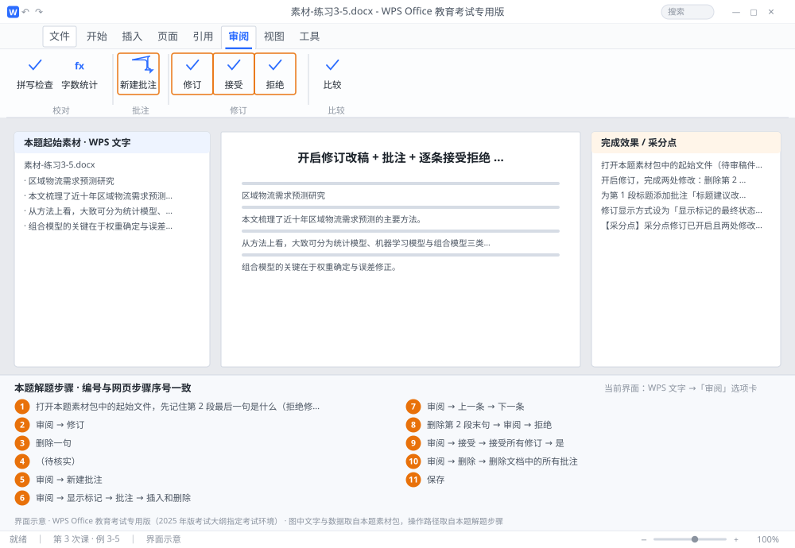

完成比对文档 · 例 3-5
开启修订改稿 + 批注 + 逐条接受拒绝 + 删除全部批注 ｜ 第 3 次课 / WPS 文字 ｜ 网页：实操-文字3.html ｜ 考试环境：WPS Office 教育考试专用版（2025 年版考试大纲指定考试环境）
用途 本页按修订后的题目要求与解题步骤生成，是交卷自查的结果基准：
逐项列出每一步应出现的可复核结果，配合模拟操作截图与解题结果文件使用。
它不是素材包的一部分，不会预置答案动作；起始素材仍从本题素材包下载。
一、本题起始素材包
目录：练习素材/练习3-5-修订与批注/ ｜
下载包：练习素材/下载/练习3-5-修订与批注.zip
二、题目要求
- 打开本题素材包中的起始文件（待审稿件，3 段）。
- 开启修订，完成两处修改：删除第 2 段最后一句；在第 3 段开头插入文字「（待核实）」。
- 为第 1 段标题添加批注「标题建议改为：区域物流需求预测方法综述」。
- 修订显示方式设为「显示标记的最终状态」并截图/确认效果。
- 先拒绝「删除第 2 段末句」这一处修订，再接受其余全部修订。
- 删除文档中的所有批注。
- 保存为 学号-姓名-练习3-5.docx。
三、解题步骤（编号与下方核对表、截图编号一致）
- 打开本题素材包中的起始文件，先记住第 2 段最后一句是什么（拒绝修订后要能复原）。
- 开启修订。「审阅」→ 点「修订」按钮（按钮变高亮/按下状态即已开启）。判断方法：此后所有改动都会带颜色标记和批注框。
- 删除一句。选中第 2 段最后一句 → Delete。该句应显示为带删除线的彩色文字。
- 插入文字。光标放到第 3 段开头 → 输入「（待核实）」。新文字应带下划线或彩色显示。
- 加批注。选中第 1 段标题 →「审阅」→「新建批注」→ 在右侧批注框输入「标题建议改为：区域物流需求预测方法综述」。
- 切显示方式。「审阅」→「显示标记」→ 确认勾选「批注」「插入和删除」「格式」；显示状态下拉选「显示标记的最终状态」。
- 逐条定位。「审阅」→「上一条」/「下一条」在修订之间跳转。
- 拒绝删除。定位到「删除第 2 段末句」这处修订 →「审阅」→「拒绝」（拒绝删除 = 恢复该句）。
- 接受其余。「审阅」→「接受」→「接受所有修订」→ 确认对话框点「是」。
- 删批注。「审阅」→「删除」→「删除文档中的所有批注」。
- 保存。保存为 学号-姓名-练习3-5.docx。接受后文档中不应再有彩色修订标记。
四、完成效果 / 采分点
采分点修订已开启且两处修改留有修订标记 · 批注内容与指定文字一致 · 显示方式为「显示标记的最终状态」 · 「删除末句」一处被拒绝（该句已恢复） · 其余修订已接受 · 批注全部删除
五、逐项完成核对表
| 步骤 | 关键操作路径 | 应出现的结果（可复核） |
|---|
| 1 | 打开本题素材包中的起始文件，先记住第 2 段最后一句是什么（拒绝修订后要能复原） | 打开本题素材包中的起始文件，先记住第 2 段最后一句是什么… |
| 2 | 开启修订 | 「审阅」、「修订」 |
| 3 | 删除一句 | 删除一句 |
| 4 | 插入文字 | 「（待核实）」 |
| 5 | 加批注 | 「审阅」、「新建批注」 |
| 6 | 切显示方式 | 「审阅」、「显示标记」、「批注」、「插入和删除」、「格式」 |
| 7 | 逐条定位 | 「审阅」、「上一条」、「下一条」 |
| 8 | 拒绝删除 | 「删除第 2 段末句」、「审阅」、「拒绝」 |
| 9 | 接受其余 | 「审阅」、「接受」、「接受所有修订」、「是」 |
| 10 | 删批注 | 「审阅」、「删除」、「删除文档中的所有批注」 |
| 11 | 保存 | 学号-姓名-练习3-5.docx |
六、模拟操作截图

界面示意 · WPS Office 教育考试专用版 · 橙色编号与本题解题步骤序号一致；
图中文字与数据取自本题素材包，功能入口取自本题解题步骤。
核对方法：按网页解题步骤完成并另存自己的成稿后，逐行比对本表第 3 列的
参数、公式、区域、文件名与对象数量；再对照网页「完成效果 / 采分点」检查版式是否一致。